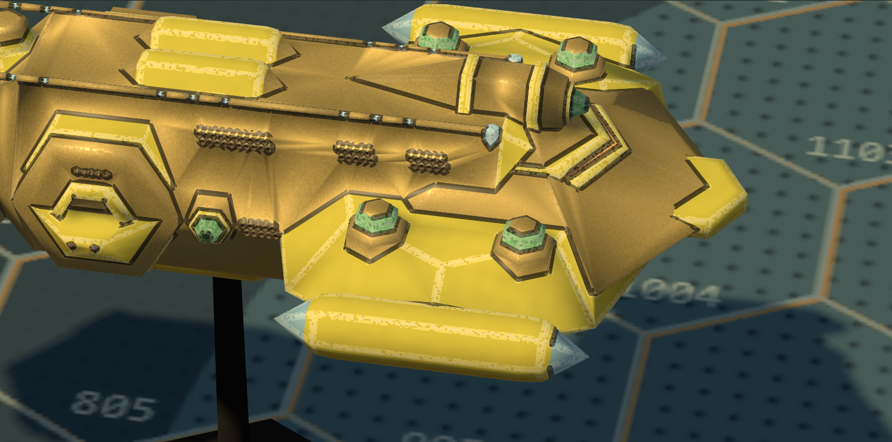
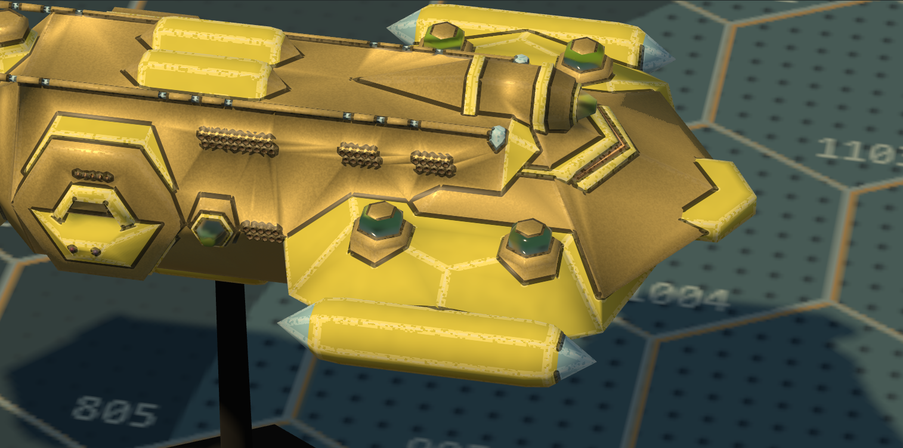
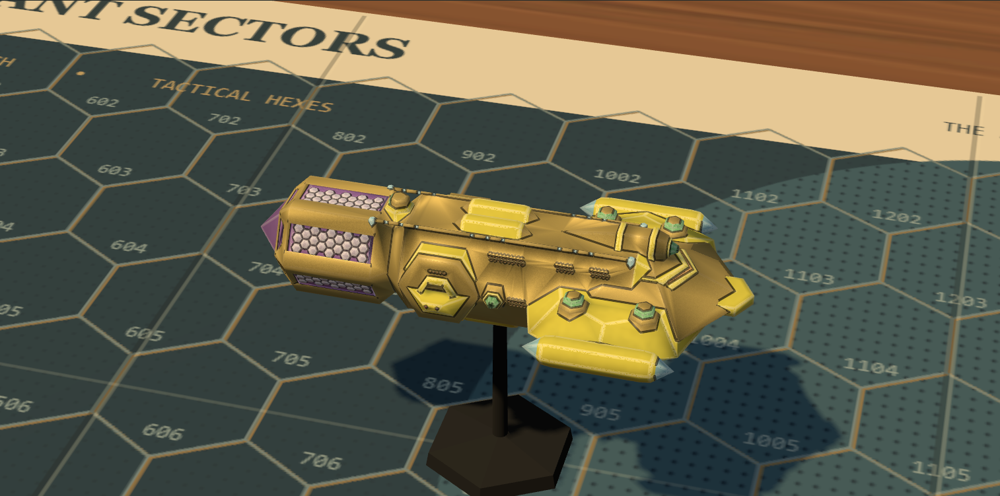
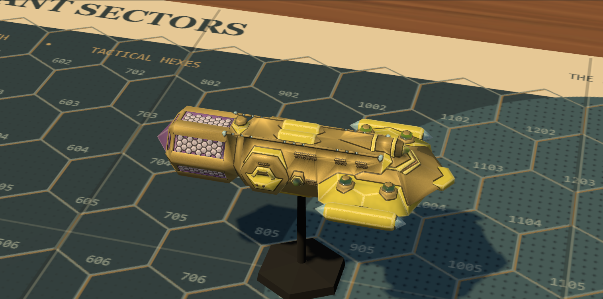
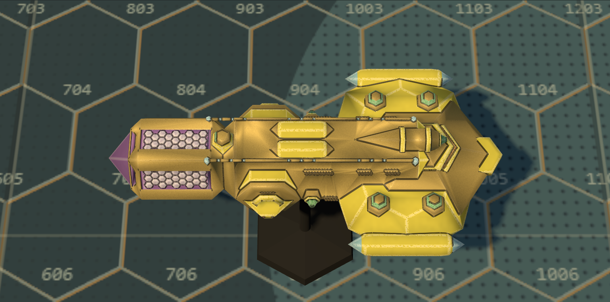

Crystal and flight stands: paint / clear moulded plastic
The larger Crystal cruiser replaces Shard as the deciding comparison. Eight existing green patches change material; pale cyan stays paint. All geometry and cameras are identical between variants. The whole miniature is a provisional 90 mm study piece. Open a capture for its native pixels.
Open interactive material study ? Three-frigate board, black posts ? Scored review and limitations
Matched material detail

Paint: opaque, inked and drybrushed
Clear: moulded surface, depth attenuation, no brush treatmentWhole-hull context ? same side camera

Paint: opaque, inked and drybrushed
Clear: moulded surface, depth attenuation, no brush treatmentWhole-hull context ? same plan camera

Paint: opaque, inked and drybrushedClear: moulded surface, depth attenuation, no brush treatmentBlack and clear posts, beside each other
Identical dimensions: 30 mm exposed, 3.0 mm at the base tapering to 2.4 mm at the ship. Both bases are black, with the retained bevelled skirt and six-facet shallow pyramid. Clear is an isolated experiment, not adopted for play.
My preference is clear for the float illusion of the stand. On the cruiser, the clear parts read as separate kit components in detail, but opaque paint identifies the green more strongly. The clear material picks up the board and its actual gold backing. Chris decides both uses.
Physical light only. Depth comes from each connected green patch's convex optical volume and from the finite cone for posts. Visible source triangles stay unchanged. Screen-space refraction and stochastic transmitting shadows approximate the optics; there are no caustics or multiple internal bounces. The old Shard pair is retained in evidence but is not the deciding comparison.